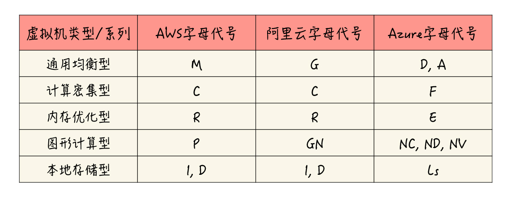
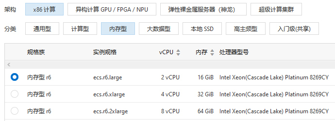

- 00 开篇词 云计算，这是开发者最好的时代.md.html
- 01 区域和可用区：欢迎来到云端数据中心.md.html
- 02 云虚拟机（一）：云端“攒机”，有哪些容易忽视的要点？.md.html
- 03 云虚拟机（二）：眼花缭乱的虚拟机型号，我该如何选择？.md.html
- 04 云虚拟机（三）：老板要求省省省，有哪些妙招？.md.html
- 05 云硬盘：云上IO到底给不给力？.md.html
- 06 云上虚拟网络：开合有度，编织无形之网.md.html
- 07 云端架构最佳实践：与故障同舞，与伸缩共生.md.html
- 08 云上运维：云端究竟需不需要运维？需要怎样的运维？.md.html
- 09 什么是PaaS？怎样深入理解和评估PaaS？.md.html
- 10 对象存储：看似简单的存储服务都有哪些玄机？.md.html
- 11 应用托管服务：Web应用怎样在云上安家？.md.html
- 12 云数据库：高歌猛进的数据库“新贵”.md.html
- 13 云上大数据：云计算遇上大数据，为什么堪称天作之合？.md.html
- 14 云上容器服务：从Docker到Kubernetes，迎接云原生浪潮.md.html
- 15 无服务器计算：追求极致效率的多面手.md.html
- 16 云上AI服务：云AI能从哪些方面帮助构建智能应用？.md.html
- 结束语 与云计算一起，迈向未来.md.html
- 捐赠
03 云虚拟机（二）：眼花缭乱的虚拟机型号，我该如何选择？
你好，我是何恺铎。
在上一讲中，我带你了解了云虚拟机的大致构架和组成，实际体验了在云上建立第一台虚拟服务器的完整流程，还介绍了在创建过程中，你所需要注意的若干重要选项及其含义。
而在这些选项之中，最重要的恐怕就是虚拟机的规格了，因为它直接决定了虚拟机的计算能力和特点，同时，也会深刻地影响使用成本，是你在选型时需要考虑的重点问题。
很多同学在实际工作中，都会遇到这样的困惑：公司要上云，或者因为业务发展需要采购新的云服务器，但是在查看某云厂商的官网时，发现可选择的虚拟机型号列表很长，有点儿眼花缭乱。
那么，不同种类的虚拟机到底有什么区别呢？在选择时又应该从哪儿入手呢？
今天，我们就来详细聊聊这个话题。
建立对虚拟机配置的多维认知
完整形容一个虚拟机的核心配置和能力，需要从多个角度来入手和描述。弄懂了这些重要维度的含义，你才能够准确理解一个虚拟机的性能预期和使用场景，从而作出正确的型号选择。这里并非只有决定CPU核数和内存大小这么简单。那么，主要是哪几个维度呢？
第一个维度，就是虚拟机的“类型”，或者说“系列”。
这是一个非常重要的概念，它是指具有同一类设计目的或性能特点的虚拟机类别。
一般来讲，云厂商会提供通用均衡型、计算密集型、内存优化型、图形计算型等常见的虚拟机类型。这些类型对应着硬件资源的某种合理配比或针对性强化，方便你在面向不同场景时，选择最合适的那个型号。
而vCPU数和内存大小（按GB计算）的比例，是决定和区分虚拟机类型的重要指征之一。
通用均衡型的比例通常是1:4，如2核8G，这是一个经典的搭配，可用于建站、应用服务等各种常见负载，比如作为官网和企业应用程序的后端服务器等。如果你对未来工作负载的特征还没有经验和把握，那你也可以先使用通用型实例，等程序运行一段时间后再根据资源占用情况按需调整。
如果vCPU和内存比是1:2甚至1:1，那就是计算密集型的范畴，它可以用于进行科学计算、视频编码、代码编译等计算密集型负载。
比例为1:8及以上，一般就会被归入内存优化型了，比如8核64G的搭配，它在数据库、缓存服务、大数据分析等应用场景较为常见。
图形计算型很好理解，就是带有GPU能力的虚拟机，一般用于机器学习和深度学习模型的训练和推理。随着AI的火热，这类机器也越来越多地出现在各种研发和生产环境中。
在主流云计算平台上，常常使用字母缩写来表达虚拟机系列。比如，AWS的通用型是M系列，阿里云的内存优化型为R系列，Azure的计算优化型为F系列等。
不同云平台之间使用的字母可能相同，也可能大相径庭，你在记忆时需要小心，不要混淆。在这里，我根据各家2020年的最新情况，简单整理了一个表格供你参考：

需要注意的是，上表中还提到了本地存储型，它是指带有高性能或大容量的本地存储的机型。我们在后续讨论云盘的课程中还会提到，这里你先了解一下就可以了。
第二个重要的维度，是虚拟机的“代”(Generation)，用来标识这是该系列下第几代的机型。
我们知道，数据中心硬件和虚拟化技术是在不断发展的，云厂商需要不断地将最新的技术和能力推向市场，让你享受到时代进步带来的技术提升。这和我们个人用的笔记本电脑是非常类似的，笔记本厂商也总是在不断地更新设计和配置，以赢得消费者的青睐。所以即便是同一系列的机型，不同的代别之间也会有不小的区别。
具体来讲呢，同类型虚拟机的更新换代，往往首先会带来相应硬件CPU的换代提升。随着一代新机型的推出，云厂商一般都会详细说明背后支撑的硬件详细信息。
比如说，AWS在2017年末，在全球发布的新一代EC2实例M5/C5/R5，它们的背后是升级到了Skylake架构的Intel至强铂金系列处理器，相比前一代采用的Broadwell或Haswell架构处理器，进步了不小，还支持了可大幅提升矢量和浮点运算能力的AVX-512指令集。
再比如，阿里云在2019年的云栖大会上，也盛大发布了第六代ECS，它全线采用了更新一代的Intel至强Cascade Lake处理器，相较前一代的Skylake实例，又在性能、价格优势等各方面有了进一步提升。你可以参考下面给出的截图：

阿里云第六代ECS（内存型）型号选择界面
这里你需要特别注意，正是由于虚拟机所采用的物理CPU在不断更新，所以云上虚拟机的单核性能未必相同。有时，虽然两个虚拟机的核数一致，但由于底层芯片的架构和频率原因，性能上可能有较大的差别，我们需要注意在不同机型间做好比较和区分。
像微软Azure，就引入了Azure Compute Unit（ACU）的概念，来帮助量化不同CPU的单核性能。比如其历史较久的通用型A系列，它的单核性能基准为100单位，而计算型的F系列的单核算力则高达210~250，是A系列的两倍还多。
另外，你还应当看到，云虚拟机的换代更新并不仅仅只在CPU等硬件配置层面，很多时候也伴随着底层软硬件架构的更新和提升，尤其是虚拟化技术的改进。
前面我提到的AWS第5代EC2实例，正是全面地构建在AWS引以为傲的Nitro System新一代虚拟化技术栈之上。
Nitro System的本质，是将许多原来占用宿主机资源的虚拟化管理工作进行了剥离，并将这部分工作负载，通过Nitro Card这样的专用硬件进行了硬件化，达到了最大化计算资源利用率的效果。在这一点上，阿里云的神龙架构也采用了类似的做法，与AWS Nitro可谓一时瑜亮，有异曲同工之妙。
总的来说，我们消费电子产品时的“买新不买旧”，在云端同样适用。新一代的型号，往往对应着全新的特制底层物理服务器和虚拟化设施，能够给我们提供更高的性能价格比。
所以，有些云平台在选择虚拟机型号时，会贴心地默认隐藏相对过时的型号。当然在个别情况下，比如数据中心的新机型容量不足，或者老型号有促销活动时，你也可以酌情选用之前的型号。
第三个重要的维度，就到了我们所熟知的实例大小（Size），也就是硬件计算资源的规模。
在选定的机器类型和代别下，我们能够自由选择不同的实例大小，以应对不同的计算负载。
如果你只是个人用来实验，那么也许单核或者双核的机器就足够了；如果是要放在大规模的生产环境当中，则可以按需选取高得多的配置，现代云计算已经能够提供多达128vCPU的机型了。
在描述实例大小时，业界常常使用medium、large、xlarge等字眼来进行命名区分，这样的描述基本已经成为事实标准，包括AWS、阿里云、腾讯云在内的多家主流厂商都在使用。
我们可以大致这样记忆：标准large对应的是2vCPU的配备，xlarge则代表4个vCPU，而更高的配置一般用 _n_xlarge来表达，其中 n 与xlarge代表的4vCPU是乘法关系。比如，8xlarge就说明这是一台8*4=32vCPU的机器。
注意：这里在进入更严谨的配置表达时，我们更多倾向于使用vCPU而非核数（Core）来描述虚拟机处理器的数量。因为超线程（HyperThreading）技术的普遍存在，常常一个核心能够虚拟出两个vCPU的算力，但也有些处理器不支持超线程，所以vCPU是更合适的表达方式，不容易引起混淆和误解。
在某些场景下，你可能还会看到“metal”或者“bare metal”这样的描述规格的字眼，中文称为“裸金属”。它们就是云服务商尽最大可能将物理裸机以云产品方式暴露出来的实例，主要用于一些追求极致性能，或是需要在非虚拟化环境下运行软件的场景。
理解虚拟机命名规则
经过前面的介绍，我们已经了解了决定虚拟机配置的最重要的三个要素，即类型、代别和实例大小。这样，一个完整的虚拟机型号命名就已经呼之欲出了。我们来看最具代表性的AWS命名规则（阿里云采用的也是非常类似的格式）：-
这其实就是利用上述的各维度，按照某种顺序排列的一个组合。理解了这一点，当你今后看到某个具体型号的时候，就能够很快地明白该型号命名背后的含义了。
比如，对于r5.4xlarge这个型号，我们会很快想到，这首先是一个R类型的第5代的内存型机器，它应该有4×4=16个vCPU，内存大小则是16×8=128G（内存型机器的CPU内存比一般为1:8）。这样分解下来，原来看上去比较陌生晦涩的一个字符串，是不是就立刻变得清晰起来了？
当然，并非所有的云都一定是采用类似AWS的命名规则，像是微软Azure，就用了一个略有不同的命名体系，大致可以总结为：-
比如“E4 v3”，就代表了微软Azure上4核32G的第三代内存型机器。掌握了Azure的格式特征后，你同样能够很快地解读标识的具体含义。
不知道你有没有注意到，在前面的命名公式中，还有一个我们称之为“后缀”的可选部分，在许多的型号命名中都能看到它。这个可选部分呢，它一般是作为型号硬件信息的一个重要补充，这种型号与不带此后缀的标准版本相比，会有一些显著的区别或特点，这也是你需要重点关注的地方。
这里我给你举一些型号后缀的例子吧。
比如，AMD现在凭借EPYC霄龙芯片，也开始在服务器硬件市场攻城拔寨，许多云厂商就专门推出了使用AMD CPU的云虚拟机，这些虚拟机往往会使用字母a作为后缀。AWS上的m5a型号，就是使用AMD EPYC 7000系列服务器CPU构建的通用型虚拟机。
再比如，AWS的C5n计算型虚拟机，其中“n”这个后缀表达的是，该规格在网络层面进行了增强，会比同型号标准机型拥有更大的带宽和网络吞吐能力。在阿里云上，表达相同“网络增强”含义的后缀则是“ne”。
有时，为了验证机型配置是否与我们的期望相符，在Linux环境下，我们可以使用lscpu命令，来了解手中虚拟机的CPU信息，并与机器的具体型号名称进行对照。下面的信息，是我在一台AWS的m5a.xlarge机型上运行的结果，你可以看到芯片提供商AMD及双核四线程等关键信息，与机型命名的含义相符：
[ec2-user@ip-xx-yy-zz ~]$ lscpu
Architecture: x86_64
CPU op-mode(s): 32-bit, 64-bit
Byte Order: Little Endian
CPU(s): 4
On-line CPU(s) list: 0-3
Thread(s) per core: 2
Core(s) per socket: 2
Socket(s): 1
NUMA node(s): 1
Vendor ID: AuthenticAMD
CPU family: 23
Model: 1
Model name: AMD EPYC 7571
Stepping: 2
CPU MHz: 2379.224
BogoMIPS: 4399.39
Hypervisor vendor: KVM
Virtualization type: full
...
课堂总结与思考
今天，我们主要探讨了云上虚拟机的类型与规格，相关要点可总结如下：
- 云虚拟机的配置规格主要取决于类型、代别、实例大小三个最重要的维度。
- 实例所属的类型，决定了虚拟机相应的硬件资源配比与专项能力，分别为不同的场景优化设计。你可以根据实际场景来酌情选用，这样既能满足需求又好控制成本。
- 云虚拟机的型号名称一般由类型、代别、实例大小这几项的缩写组合而成，有时还会带有补充后缀。了解了某个云的型号格式后，通过拆分对应，你很容易理解具体型号的含义。
最后，作为今天的交流讨论题，你可以回忆一下，在生产或测试环境中，使用过的最强劲的云端机型。你注意过它是什么系列、什么型号的吗？它主要被用于什么业务场景呢？
欢迎在留言区和我互动，我会第一时间给你反馈。如果觉得有收获，也欢迎你把这篇文章分享给你的朋友。我是何恺铎，感谢阅读，我们下期再见。
© 2019 - 2023 Liangliang Lee. Powered by gin and hexo-theme-book.